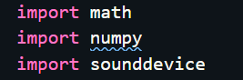

מודולים בסיסיים מופיעים אצלי כ"שגיאה" ומעלים לי הערות בכתבן.
מודולים כמו numpy, itertools ושאר ירקות שאני אוהב.
(מותקנים אצלי ומעודכנים בגרסא - בדקתי בpip)
להלן דוגמא:

חיפשתי באינטרנט פתרונות וכולם כמעט היו קשורים לגרסא של פייתון ולקשר שלה עם אנקודנה.
אולם אני מחקתי את האנקונדה מהמחשב שלי ומחקתי את פייתון והתקנתי פייתון 3.8.5
מישהו נתקל בבעיה דומה והצליח להתגבר על זה ?
** חשוב לציין כי הקוד עצמו רץ - זה אמין עניין גרפי כזה לדעתי אולם זה מציק לי ממש וממלא לי את הקוד בשגיאות לא הכרחיות **
לייק 1
hadaskam
גם לי זה קרה. פתרתי את הבעיה ע"י כך שהפעלתי את VS CODE דרך האנקונדה
ofirp
יש מצב שאתה מריץ בסביבה וירטואלית?(venv)
aviadamar
אני לא מריץ בסביבה וירטואלית ואין לי אנקונדה ומעדיף שלא להתקין אותה שוב.
אתה בטוח שהשגיאה היא באמת עניין של בעיה עם הספריות או אי תאימות עם הגרסה?
תסתכל בחלון התחתון תחת לשונית problems מה רשום.
לי הייתה את אותו סימון בעיה, אבל מהסיבה שאחד מהתוספים (spell checker כלשהו שאיני זוכר את שמו) לא הכיר את שמות הספריות כמילים באנגלית.
אם זה אכן המקרה, מקש ימני ו-“add to dictionary” עושה פלאים (כנראה מלפני שנולדתי).
orronai
הקו הכחול מתחת למילה כלשהי מסמלת בvscode שגיאת כתיב (לפי התוסף spell checker).
תלחץ קליק ימני ותוסיף אותה למילון, או להבא לגבי איות של מילה שאתה רוצה רק להתעלם ממנה יש גם אופציה לעשות ignore.
בכל מקרה כמו שיובל ציין אתה יכול להכנס לproblems בתחתית החלון של הvscode ולראות מה הבעיות בכל הקובץ/ים
aviadamar
זה בדיוק העניין שזה רשום לי בחלום שגיאות כמילה ״לא נכונה״ לא ידעתי שזה עניין של התוסף של הספלינג, אנסה לראות אם יש את האופציה הזו שאהיה ליד מחשב.
כמו שאמרתי הכל עובד אז סיכוי גבוה שזה אכן העניין עם התוסף (: